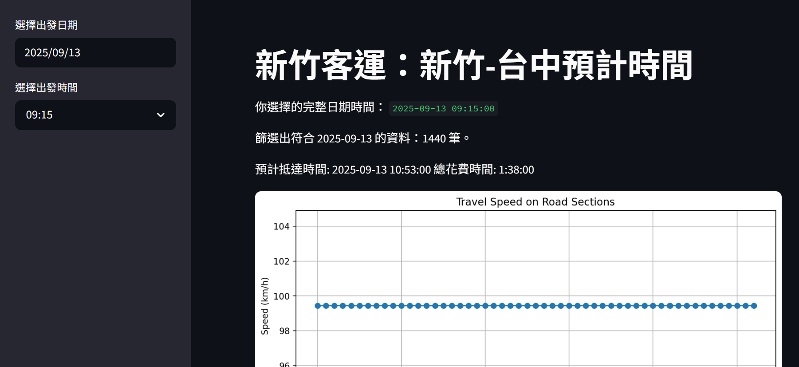
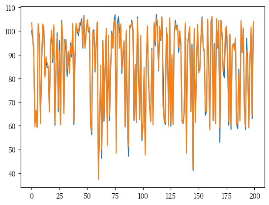
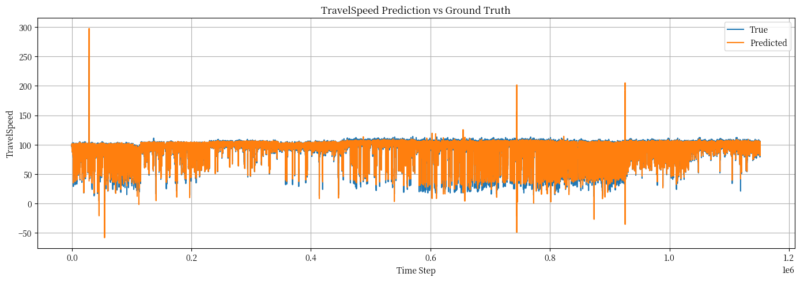

前言
這個 Side Project 的發想完全來自我個人生活中的需求。
以前在大學時認識了一些台中人，或是畢業後留在台中工作的人，加上在在大學生活期間我愛上在台中的生活，畢業後即使在台北工作，有空時我還是會跟朋友約一約，前一天回到新竹，隔天搭乘新竹客運跟著新竹的朋友一起跑到朝馬去找老朋友吃飯、聊天、唱歌。不過這種難得的假日聚會，住在台中的朋友總是會事先負責訂位，確保我們都有店可去。而我們呢，則是負責不要遲到XD
通常為了避免遲到，我跟朋友通常會搭早一點的客運出發。長久搭下來，主要影響客運的因素為會不會在路上塞車，經驗上來說，到台中時都會塞一小段。自從知道交通部有國道車流的開放資料後，我就想嘗試看看用國道的資料建模，看看能不能用神奇的 “占卜” ，讓我們成為時間精算師，再也不要搭這麼早的客運了！XD
需求架構
我的需求架構為：
- 建一個簡單的網站，當使用者輸入客運出發時間時，會顯示客運預計到達朝馬(台灣大道)的時間。
不過因為我手上只有國道的車流資料，實際客運會在市區停留靠站，所幸花費時間基本上都是固定的，所以我只有預測客運在國道上的時間，市區停留靠站固定設定為45分鐘。
此外，因為設備跟預算上的限制，我的預測資料是事先準備好(預測好)，再交由網站呈現。
最後做出來的東西，先用 Streamlit 套件來Demo：

但其實好像可以直接用HTML+CSS+JavaScripts靜態網頁的架構，因為我的模型沒有包在裡面XD
建立過程
主要流程為：
下載交通部2024資料 → 清洗資料 → 補齊缺失資料 → LSTM模型建模 → 產出資料 → Web 呈現 因為這次使用的資料類型為 single time series，加上懶得去找其他變量的關係，所以完全沒有做特徵工程。
資料來源簡介
使用來源為交通度高公局交通資料庫的開放資料，網址。
我使用的欄位有：
SectionID
Travel_Speed
以及在檔名擷取時間。
清資料
主要流程為：
將資料按2024年國定假日、符合新竹-台中的 Section 按 SectionID 爬下來
補齊遺失值，基本使用 Cubic Spline 補齊遺失值，如果補出來的資料太不合理，例如嚴重超過速限，則考慮那一天的資料都移除。所幸只有228那天有問題，只移除這一天。
最後用敘事性統計觀察資料有無異常。
訓練資料
流程：
區分 training set, valid set，test set 為2025上半年的資料。
訓練模型
計算valid set RMSE、畫圖觀察
確認OK後，拿 test set 試試
計算test set RMSE、畫圖觀察
確認都可以後再依 section 產出預測資料。
指定 LSTM 的原因
因為我想玩還有我很懶，原先在指定 LSTM 之前，有先考慮過使用 ARIMA 或是 SARIMA 模型來進行預測，不過指定這種經典的統計模型的缺點是滿吃對資料的觀察能力，我太菜了，沒有人在旁邊指導我撞牆可能會撞很久。此外，一直以來有耳聞過 LSTM 的用於 series data 的強大，也有看過一些與其他模型的預測能力比較的論文，神經網路家族的模型雖然複雜，但沒有特殊的統計假設，因此考慮後決定用 LSTM 模型來進行預測。
模型架構
試了好幾個參數後，得出的最好的模型架構與效果為
class LSTMModel(nn.Module):
def __init__(self, input_size=4, hidden_layer_size=16, output_size=1, num_layers=1):
super().__init__()
self.hidden_layer_size = hidden_layer_size
self.num_layers = num_layers
self.lstm = nn.LSTM(input_size, hidden_layer_size, num_layers, batch_first=True)
self.linear = nn.Linear(hidden_layer_size, output_size)
def forward(self, input_seq):
batch_size = input_seq.size(0)
h0 = torch.zeros(self.num_layers, batch_size, self.hidden_layer_size).to(input_seq.device)
c0 = torch.zeros(self.num_layers, batch_size, self.hidden_layer_size).to(input_seq.device)
lstm_out, _ = self.lstm(input_seq, (h0, c0))
out = self.linear(lstm_out[:, -1, :])
return out模型參數設定
基本參數為
# 訓練參數
seq_length = 15
predict_step = 15 #一次預測15分鐘
epochs = 30
patience = 5 # early stop
# Early stopping at epoch 12.LSTM模型指定參數為
LSTMModel(
(lstm): LSTM(4, 16, batch_first=True)
(linear): Linear(in_features=16, out_features=1, bias=True)
)device = torch.device('cuda' if torch.cuda.is_available() else 'cpu')
model = LSTMModel().to(device)
loss_function = nn.MSELoss()
optimizer = torch.optim.Adam(model.parameters(), lr=0.001)相關訓練數據
RMSE 部分：
| set | RMSE |
|---|---|
| valid set | 3.0401 |
| test set | 6.0785 |
 ▲ valid set 前 200 筆真實值(藍線)跟預測值(橘線)觀察圖
 ▲ test set 真實值(藍線)跟預測值(橘線)觀察圖，可以看到除了部分超過速限的資料外，整體還行。